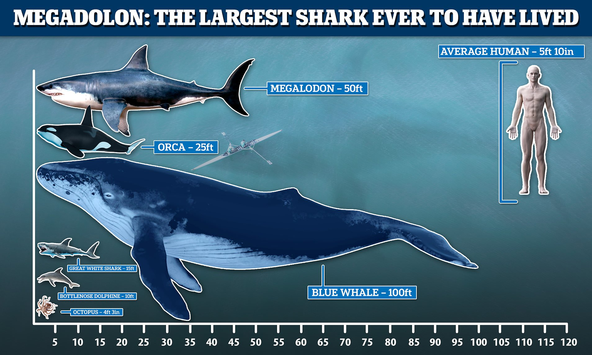
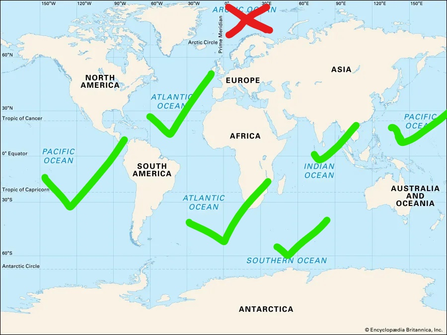
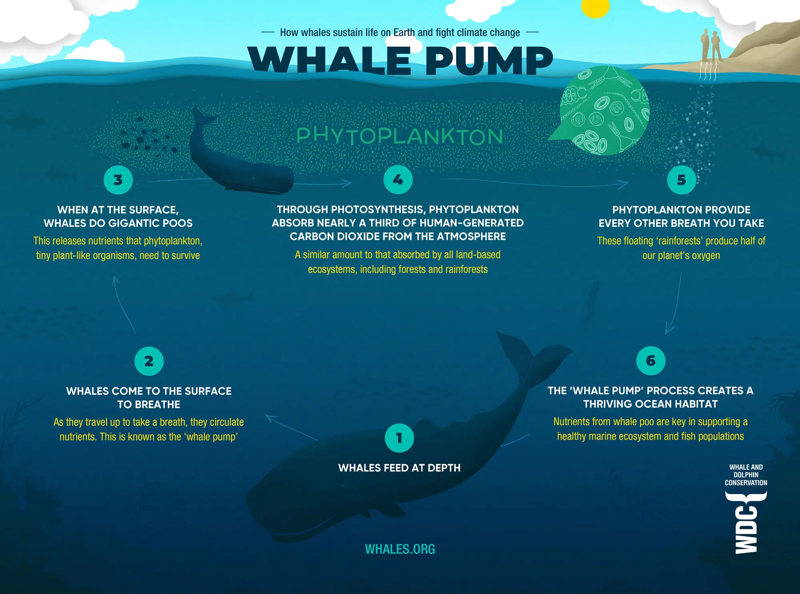

What are Blue whales?
You might wanna ask yourself, what are blue whales? Well, to answer that question, let's dive into the topic. Blue whales are the largest known animal to have ever been in Earth! Think about that
for a second. We are all familiar with the massive Megalodon right? The one with massive razor sharp teeth, huge fins and overall large body.
They average at around 10-14 meters while a Blue whale is on average around 23-24 meters! That's almost twice as large! That's not all either, Antarctic Blue Whales can reach to sizes of 30+ meters!
That should really put into perspective how large these creatures really are. Blue whales are also the heaviest animals on the planet weighing up to 181,000 kilograms! Their tongues can weigh as
much as elephants while their hearts, as much as a car.

Image link: Here
Where can you see these creatures?
According to National Geographic and NOAA Fisheries
, the Blue Whale can generally be seen in every ocean except for the Arctic. Blue whales migrate during summer for feeding grounds and at winter for
breeding purposes. However, some scientists think a few of the species don't migrate at all and just stay at the same place. The route they take when migrating isn't generally known but it may solely
depend on where there's a large concentration of krill.

Why are they important for our ecosystems?
Blue whales, along with other whales, help process nutrients for oceanic life. They fertalize the oceans by eating krill and then when nature calls, the defecated krill is used to feed
phytoplankton
. Phytoplankton is responsible for almost a third of oxygen reproduction on Earth. According to National Geographic, Plankton also play a role at the end
of the food web—as decomposers and detritivores. These plankton, including bacteria, fungi, and worms, break down and consume dead plant and animal material that falls through the water column as "marine snow." Marine snow often includes fecal matter, sand,
soot, skin, and other organic and inorganic particles descending to the seafloor.

Image link: Here
Trivias about Blue Whales
Blue Whales typically live to 80 or 90 years, with some, up to 110 years.
Blue Whales may be carnivores, however, they only eat one of the tiniest creatures of the sea called Krill.
Blue Whales can grow to over 30-metres in length, but are extremely graceful swimmers. They typically have a cruising speed of around 8-kilometres per hour, and can hit top speeds of up to 50 kph.
Blue Whales are the largest animals to have ever exist on the planet that is currently known of!
Not only are they the largest, but also the loudest!
Blue Whales are facing endangerment however, their numbers are slowly rising<3.
Blue Whales only usually breed once every three years while pregnancy last up to a year.
Blue Whales eat between 20 million to 50 million calories per day! For reference, a human usually only eats 2000 calories per day.
Blue Whales may be carnivores, however, they only eat one of the tiniest creatures of the sea called Krill.
Blue Whales can grow to over 30-metres in length, but are extremely graceful swimmers. They typically have a cruising speed of around 8-kilometres per hour, and can hit top speeds of up to 50 kph.
Blue Whales are the largest animals to have ever exist on the planet that is currently known of!
Not only are they the largest, but also the loudest!
Blue Whales are facing endangerment however, their numbers are slowly rising<3.
Blue Whales only usually breed once every three years while pregnancy last up to a year.
Blue Whales eat between 20 million to 50 million calories per day! For reference, a human usually only eats 2000 calories per day.